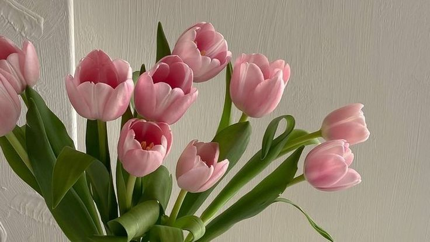

Lalelele (Tulipa) sunt plante perene originare din Asia Centrală, renumite pentru florile lor vibrante și diverse forme. Florile au culori variate, inclusiv roșu, roz, galben, alb și violet. Lalelele cresc din bulbi și preferă soluri bine drenate și locuri însorite. Bulbii se plantează toamna pentru a înflori în primăvară. Aceste flori sunt foarte populare în grădini și aranjamente florale, simbolizând iubirea perfectă și prosperitatea.
